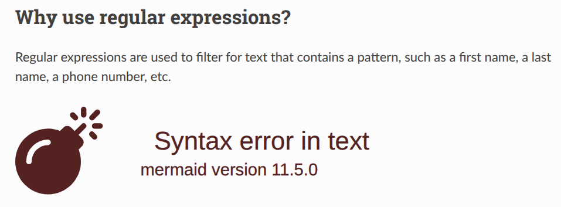

Lesson plan 2025-06-02 by Richel¶
- Date: 2025-06-02
- Author: Richel
Morning 1: smarter command-line¶
I am in the middle of the schedule:
| Time | Topic | Teacher |
|---|---|---|
| 9:00-10:00 | Linux pipe, wc, cut |
BB |
| 10:00-10:15 | Break | . |
| 10:15-11:00 | grep |
RB |
| 11:00-11:15 | Break | . |
| 11:15-12:00 | awk |
RB |
I should assume the learners can use a pipe,
grep¶
My learning outcomes are:
- Learners can use
.,*,+,?,[],[^],{},()in regular expressions - Learners can use
grepfor pattern matching - Learners have practiced using a book on bash/Linux
Add LOs are:
- Learners have experienced that
grepis a filter - Learners have sent text to
grepusing a pipe, e.g.man grep | grep "[^A-Z] - Learners know there are multiple flavours of regular expressions:
use
grepandgrep -E
As sources of text, I consider to use:
- ‘Frankenstein; Or, The Modern Prometheus’, from a plain text file at Project Gutenberg
man greporyelp man:greporman grep | grep "^[A-Z]"- https://www.regexone.com/
[Shotts, 2024]download and can be found in this repository atbooks/the_linux_command_line.pdf- man grep | grep “^[[:upper:]]”
Using the grep manual and
https://www.regexone.com/
felt like the best options.
Fixing the layout is harder, e.g. getting mermaid to work, making the
admonitions prettier (fails).
I will give up on mermaid:

I think this session is ready now, but I can imagine writing the next session may influence it, so let’s write the next session first, before creating a video.
awk¶
It used to be sed and awk in an earlier schedule. Commit
7282e58552cdbeb7bf70b0f3133ac2bee7702a33 moved sed to Day 2.
I will accept: we (me and BB) are probably both working in the weekend,
so let’s accept this change.
My LOs are:
- I can use
awk - Learners have practiced using a book on bash/Linux
I’ve inherited the first one from BC and BB and is simple enough,
unlike the ones for grep, where I added some details.
I will add some LOs:
- I can use
awkin pipes - I can use regular expressions in
awk - I can use
awkto read a specific column - I can use
awkto transform text
Non-LOs:
- I can use
awkto analyse a file: the day is called ‘Smart command-line’
Books to use:
- Bash Beginners Guide chapter 6, from section 6.2 to section 6.2.3 seems to work in my context
- Advanced Bash Scripting Guide, page C2. Awk is a micro primer, with some usefulness
- A practical guide to learning awk: uses files, not pipes
- Gawk: Effective AWK Programming: too complex for the LOs
- The Linux Command Line: no chapter on AWK
- Introduction to Linux: no chapter on AWK
- Linux Fundamentals: no chapter on AWK
- Ultimate Linux Newbie Guide: no chapter on AWK
- Advanced Linux programming: no chapter on AWK
- Linux From Scratch: no chapter on AWK
- Beyond Linux From Scratch: no chapter on AWK
I will use the Bash Beginners Guide.
Mapping sessions to LOs:
- 6.2.1: I can use
awkin pipes - 6.2.1: I can use
awkto read a specific column - 6.2.2: I can use
awkto transform text - 6.2.3: I can use regular expressions in
awk
Seems this works!
I will map these to exercises, and adding a ‘Can awk do …?’ section.
References¶
[Shotts, 2024]Shotts, William. The Linux command line: a complete introduction. No Starch Press, 2024. (inbooks/the_linux_command_line.pdf)